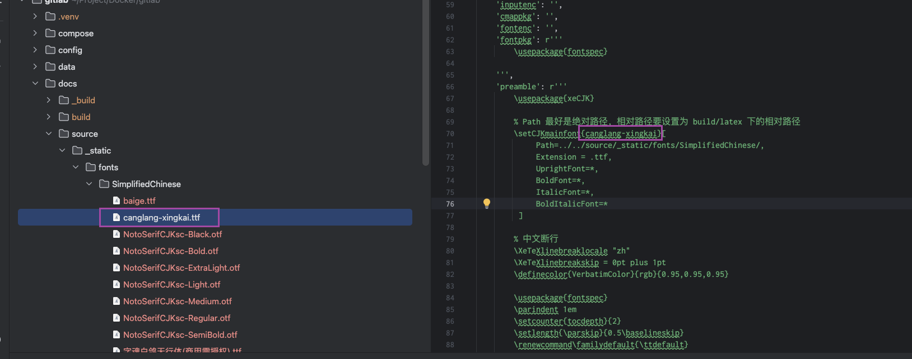

2024-06-07
latex模版配置说明
修改于: 2024-06-07常见
配置说明:
\parindent 2em
控制段落首行缩进的长度
\setcounter{tocdepth}{3}
控制目录的深度
\setlength{\parskip}{0.5\baselineskip}
控制段落之间的垂直间距
\let\cleardoublepage\clearpage
这将告诉 LaTeX 在生成文档时,使用 \clearpage 而不是 \cleardoublepage。
\cleardoublepage 会强制在新的一页开始, 这可能会导致出现不必要的空白页。
\clearpage 则会更加灵活,只在需要的时候才开始新的一页。
\usepackage{xeCJK}
中文字体扩展管理宏包，务必添加！！
在编写的.tex文件的导言区导入宏包： \usepackage{xeCJK}
\setmainfont{<font>}:
用于设置文档的主要字体,即用于正文的字体。
这个字体通常是一种衬线字体(serifed font)。
它会影响到文档中除了等宽字体和无衬线字体之外的所有地方。
设置本机已安装的字体很简单, 直接::
\setCJKmainfont{已安装字体名}
但是设置未安装就有点麻烦了
比如设置外部未安装中文字体::
\setCJKmainfont{NotoSerifCJKsc}[
Path=../../source/_static/fonts/SimplifiedChinese/,
Extension = .otf,
UprightFont=*-Regular,
BoldFont=*-Bold,
ItalicFont=*-Regular,
BoldItalicFont=*-Bold
]
注意本地测试的时候 Path 最好设置为绝对路径, 因为 相对路径要设置为 build/latex 下的相对路径, 可能不一定能好找
\setCJKmainfont
设置中文主字体。
\setmonofont{<font>}:
用于设置等宽字体(monospace font)。
这种字体通常用于代码片段、终端输出等需要固定宽度的地方。
它不会影响到正文和标题等其他部分的字体。
\setCJKmonofont
用于设置中文等宽字体。
\setsansfont{<font>}:
用于设置无衬线字体(sans-serif font)。
这种字体通常用于标题、页眉页脚等需要简洁效果的地方。
它不会影响到正文和等宽字体等其他部分的字体。
\setCJKsansfont
用于设置中文无衬线字体。
注解
如果是用于 sphinx, 需要配置在 conf 的 latex_element 下的 preamble. 详见 :Sphinx使用
拓展-设置中文字体
方案1-使用已安装字体
直接引用系统已存在字体名即可(如果是中文, 需要用对应的英文名)
\usepackage{xeCJK}
\usepackage{fontspec}
\setCJKmainfont{kai}
注解
类 Unix 系统可以使用 fc-list 查看已安装字体
方案2-使用已下载未安装字体
使用外部字体参考: Configuring fontspec to use the fonts
\usepackage{xeCJK}
\usepackage{fontspec}
\setCJKmainfont{NotoSerifCJKsc}[
Path=../../source/_static/fonts/SimplifiedChinese/,
Extension = .otf,
UprightFont=*-Regular,
BoldFont=*-Bold,
ItalicFont=*-Regular,
BoldItalicFont=*-Bold
]
或者这样反过来也行, 顺序没影响
\setCJKmainfont[
Path=../../source/_static/fonts/SimplifiedChinese/,
Extension = .otf,
Scale=0.9,
UprightFont=*-Regular,
BoldFont=*-Bold,
ItalicFont=*-Regular,
BoldItalicFont=*-Bold
]{NotoSerifCJKsc}
另外除了 \setmainfont{<font>} 设置主字体, 还有 \setmonofont{<font>} 用于设置等宽字体(monospace font)。 \setsansfont{<font>} 用于设置无衬线字体(sans-serif font)。 酌情使用即可
若字体没有分斜体粗体等, 即
\setCJKmainfont{canglang-xingkai}[
Path=../../source/_static/fonts/SimplifiedChinese/,
Extension = .ttf,
UprightFont=*,
BoldFont=*,
ItalicFont=*,
BoldItalicFont=*
]
可以直接省略掉这部分配置
\setCJKmainfont{canglang-xingkai}[
Path=../../source/_static/fonts/SimplifiedChinese/,
Extension = .ttf
]
注解
Path的路径要找对, 不知道就用绝对路径.
另外, 字体名称就是文件名, 不需要去找字体文件真实的 family (截图使用的是 canglang-xingkai 字体)

拓展-中文断行
设置:
\XeTeXlinebreaklocale "zh"
\XeTeXlinebreakskip = 0pt plus 1pt
\definecolor{VerbatimColor}{rgb}{0.95,0.95,0.95}